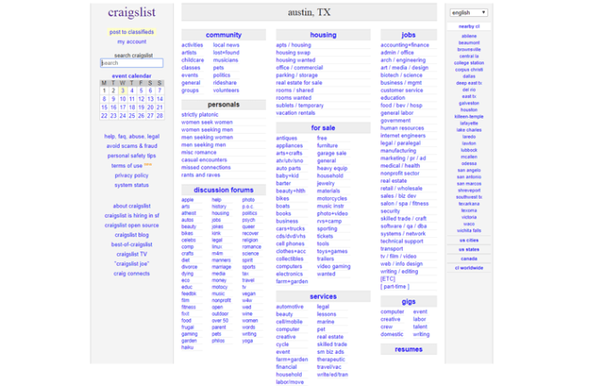

What Makes It Ugly
The interface has poor color contrast, inconsistent fonts, cluttered layout,
and confusing navigation.
How I'd Improve It
- Use a consistent color palette and typography system
- Apply spacing and hierarchy to improve readability
- Streamline navigation with clear CTAs
- Enhance accessibility by ensuring contrast and keyboard navigation